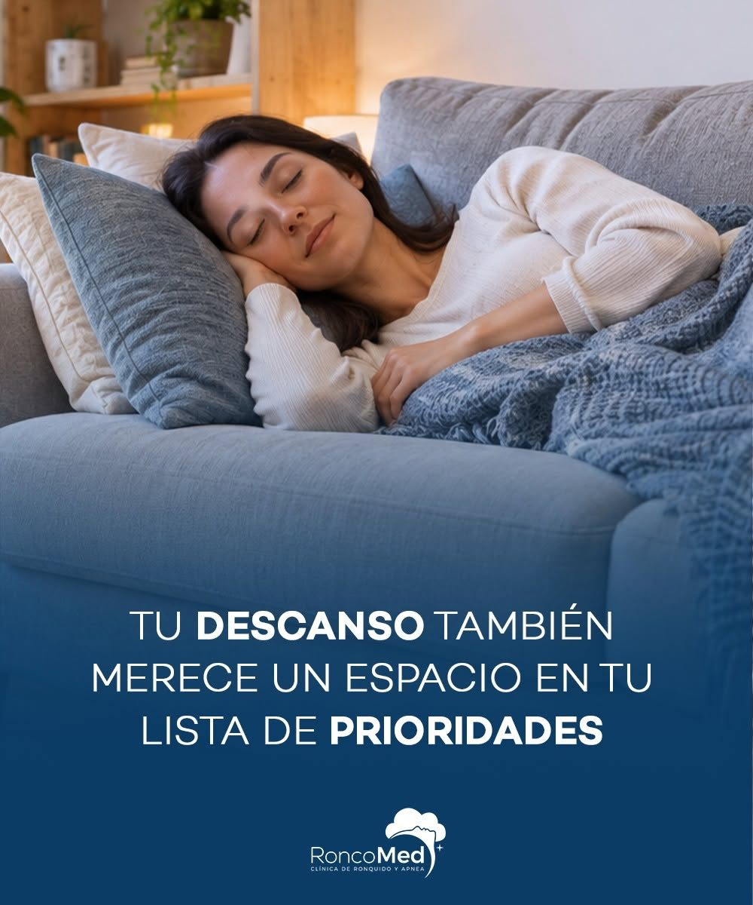

Misión
Devolver a cada paciente un sueño reparador mediante un diagnóstico preciso y tratamientos personalizados, explicados con claridad y acompañados con calidez en cada etapa.
Clínica de Ronquido y Apnea · Boca del Río
Diagnóstico y tratamiento especializado del ronquido, la apnea del sueño y otros trastornos respiratorios que afectan tu descanso y tu calidad de vida.

Sobre RoncoMed
En RoncoMed nos especializamos en el diagnóstico y tratamiento de apnea del sueño, ronquido y otros trastornos respiratorios del sueño que afectan tu calidad de vida.
Sabemos que roncar no es “normal” ni algo que debas aguantar. Detrás del ronquido puede haber una vía aérea que se cierra mientras duermes, y eso impacta tu energía, tu corazón, tu ánimo y hasta el descanso de quien duerme a tu lado.
Devolver a cada paciente un sueño reparador mediante un diagnóstico preciso y tratamientos personalizados, explicados con claridad y acompañados con calidez en cada etapa.
Ser la clínica de referencia en Veracruz para el tratamiento del ronquido y la apnea del sueño, reconocida por su calidad humana y su enfoque integral.
Autoevaluación rápida
Marca las que te pasen con frecuencia. No sustituye una consulta médica, pero te ayuda a saber si vale la pena una valoración.
Selecciona las señales que reconozcas.
Quiero una valoraciónServicios
Evaluamos nariz, garganta y vía aérea completa para encontrar la causa y no solo tratar el síntoma.
Exploración completa de nariz, garganta y vía aérea superior para identificar qué provoca tu ronquido.
Ver más →Registramos tu respiración y oxigenación durante la noche para confirmar y medir la apnea del sueño.
Ver más →Te ayudamos a elegir, ajustar y adaptarte a tu equipo de presión positiva para dormir sin pausas respiratorias.
Ver más →Visualizamos con precisión el sitio de obstrucción para elegir el tratamiento más efectivo.
Ver más →Procedimientos de nariz, paladar y garganta, recomendados solo cuando realmente son la mejor opción para ti.
Ver más →Acompañamiento continuo y hábitos de higiene del sueño para que los resultados se mantengan en el tiempo.
Ver más →Cómo trabajamos
Escuchamos tu historia, la de tu pareja y exploramos tu vía aérea.
Medimos cómo respiras mientras duermes con un estudio de sueño.
Te explicamos tus resultados con claridad y sin tecnicismos.
Diseñamos tu plan: CPAP, cirugía o manejo combinado, y te acompañamos.
Especialistas
 DV
DV
Otorrinolaringóloga
 RM
RM
Especialidad (ejemplo)
Testimonios ejemplo
“Mi esposa ya no se va a dormir a la sala. Y yo por fin despierto descansado.”
“Me explicaron todo con mucha paciencia. Me adapté al CPAP en pocas semanas.”
“Ya no me quedo dormido en el trabajo. No sabía cuánto me afectaba la apnea.”
Preguntas frecuentes
¿No encuentras la tuya? Escríbenos por WhatsApp y con gusto te respondemos.
No siempre, pero el ronquido fuerte y frecuente puede ser señal de apnea obstructiva del sueño, que se asocia con hipertensión, problemas cardiacos y somnolencia diurna. Vale la pena valorarlo.
Es cuando la vía aérea se cierra parcial o totalmente mientras duermes, provocando pausas en la respiración y microdespertares que impiden un descanso profundo.
No. Muchos pacientes mejoran con terapia CPAP u otras medidas. La cirugía se recomienda solo cuando realmente es la mejor opción para ti.
Se colocan sensores que registran tu respiración, oxigenación y otros parámetros mientras duermes. Es indoloro y te explicamos cada paso.
No es obligatorio, pero ayuda mucho: suele ser quien nota los ronquidos y las pausas al respirar.
Contacto
Déjanos tus datos y se abrirá WhatsApp con tu mensaje listo para enviar.